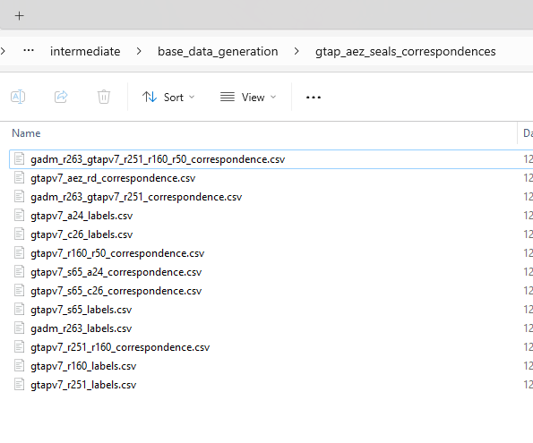
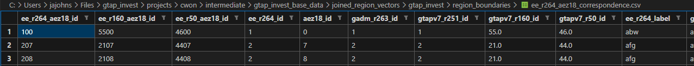
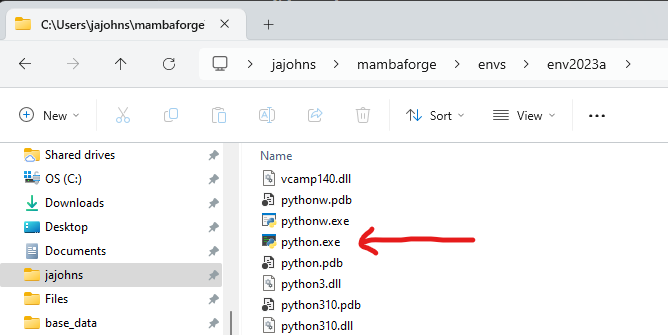
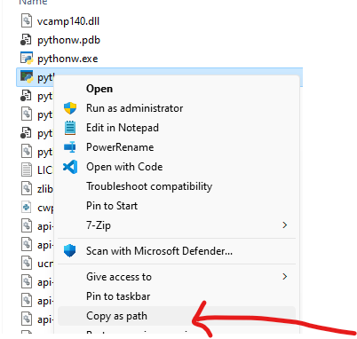

Slashes vs backslashes
On windows, for historical sillyness reasons, paths at the most bare-metal level separate levels with backslash \. However, nearly everything else within windows correctly interprets a forward slash / as a backslash at the os level. Thus, although we can’t control how OTHER programs process or report out on backslashes, we follow the basic rule that if we are inputting it as text into our repos, always use forward slash, no matter what ($5 bounty: argue a case where this needs an exception within our devstack). Linux/mac always uses forward slash (henceforth, aka slash), so this should work well.
Id, index, label, name, description
In programming, id and index are two different concepts that are used in different contexts.
id refers to the unique identifier of an object. In this specification, it is an integer that is sorted by the ONE in the many-to-one correspondence, sorted alphabetically at generation time (though not necessarily to remain sorted given downstream correspondences). In the devstack (though not in programming in general), we will assume that id is an integer greater or equal to 1 where 0 denotes NDV. This enables faster computation with e.g. id_raster and reclassify_raster.
index refers to the position of an element in a sequence (e.g. a list or a string). In the context of a correspondence file, this is the position of the row within the sorted spreadsheet, but is not assumed to be stable and shouldn’t generally be used.
labelheader refers to an (exactly) 4 character string that is lowercase-alphanumeric with no special symbols. Useful for the Header label in har files. Technically is case insensitive but we assume lowercase.
labelshort refers to an 8-character or less string that is lowercase-alphanumeric with no special symbols. Useful for .har files.
label refers to a string that is lowercase-alphanumeric with no special symbols besides the hyphen.
name refers to a string of any ascii characters with python-style escaping of special characters: 'She\'s a star!' . It’s assumed to be short enough to view as a column header or plot label
Descriptionrefers to a name of any length with detailed description, possibly even formatted MD text.
If there is a domain, described below, id, index, etc all should prepended with it to be eg gadm_id.
Id, Index etc. in the context of vector data
Note that geopandas assumes the vector data are indexed with an FID. This is the order in which the geometries are added to the file and can get wonky when dealing with legacy file types (like ESRI Shapefiles). Additionally, when you write a GPKG to a CSV, it will not include the fid, so you might lose data. To fix this, EE spec requires that any GPKG when saved as a CSV have a new column, id added as the first col, which is generated starting at 1 and incrementing up by 1 after having sorted the data on the simplest non-fid label (e.g., iso3_label). See gtap_invest_generate_base_data.py.
Labels files
Based on how the GTAP database is structured, EE spec defines several file types of files to systemetize how dimensions/sets are defined (and then used in e.g. figure plotting). A single dimension is first defined by a labels file. The labels file has at least 3 columns of domain_id, domain_label, domain_name and optionally a domain_description. If present, a column needs to be fully filled (no missing values). Label files are used in other contexts to, e.g., go from id to name for labeling an axis on a plot, as well as building the correspondence files below.
Correspondences
Model linkages often require mapping many-to-one relationship in a consistent way. Correspondence files define this via a src-to-dst (source and destination). They are named according to a relatively complex pattern. Specifically, using the file path gadm_r263_gtapv7_r251_r160_r50_correspondence, we have a domain label gadm followed by a src dimension-size pair r263 (where r is a label, short for region in this case, and 263 is the number of unique entries in that dimension). To be a correspondence,there needs to be at least one other dst dimension-size pair, where in this case there are 3 additional dimension-size pairs (r251, r160, and r50). However, the later three pairs are from a different domain, namely that of gtapv7. Each pair is identified with the domain most identified most closely prior. The dst dimension-size pairs are sorted in order of decreasing size. The dst dimension-size pairs are then followed by the word correspondence. This example creates a correspondence file that maps from the GADM 263 regions to the GTAPv7 251 regions, which are then mapped to the GTAPv7 160 regions, which are then mapped to the GTAPv7 50 regions.
An example of a 2-type correspondence is below. However, in this file, src and dst would have to be replaced with the specific domain names used.
| src_id | dst_id | src_label | dst_label | src_description | dst_description |
|---|---|---|---|---|---|
| 1 | 1 | aus | oceania | Australia | Oceania (including NZ and AUS) |
| 2 | 1 | nzl | oceania | New Zealand | Oceania (including NZ and AUS) |
Here are the specific labels and corespondence files generated for gtapv7-aez-rd:

If defined exactly right, 2 dimensional correspondence files will work with Hazelbean via
seals_utils.set_derived_attributes(p)
and
p.lulc_correspondence_dict = hb.utils.get_reclassification_dict_from_df(p.lulc_correspondence_path, 'src_id', 'dst_id', 'src_label', 'dst_label')}`
# return a very useful dictionary for various reclassification tasks:
return_dict = {} return_dict['dst_to_src_reclassification_dict'] = dst_to_src_reclassification_dict # Dict of one-to-many keys to lists of what each dst_key should be mapped to from each src_key. Useful when aggrigating multiple layers to a aggregated dest type
return_dict['src_to_dst_reclassification_dict'] = src_to_dst_reclassification_dict # Useful when going to a specific value.
return_dict['dst_to_src_labels_dict'] = dst_to_src_labels_dict # Dictionary of lists of labels that map to each dst label
return_dict['src_ids'] = remove_duplicates_in_order(src_ids) # Unique set of src_ids r
return_dict['dst_ids'] = remove_duplicates_in_order(dst_ids) # Unique set of dst_ids
return_dict['src_labels'] = remove_duplicates_in_order(src_labels) # Unique set of src_labels
return_dict['dst_labels'] = remove_duplicates_in_order(dst_labels) # Unique set of dst_labels
return_dict['src_ids_to_labels'] = {k: v for k, v in zip(return_dict['src_ids'], return_dict['src_labels'])} # one-to-one dictionary of src ids to labels
return_dict['dst_ids_to_labels'] = {k: v for k, v in zip(return_dict['dst_ids'], return_dict['dst_labels'])} # one-to-one dictionary of dst ids to labels
return_dict['src_labels_to_ids'] = {k: v for k, v in zip(return_dict['src_labels'], return_dict['src_ids'])} # one-to-one dictionary of src labels to ids
return_dict['dst_labels_to_ids'] = {k: v for k, v in zip(return_dict['dst_labels'], return_dict['dst_ids'])} # one-to-one dictionary of dst labels to ids}Among other possibilities, this could be used for reclassifying LULC geotiffs via
rules = p.lulc_correspondence_dict['src_to_dst_reclassification_dict'] hb.reclassify_raster_hb(raster_path, rules, output_path)Combined ids
One special case of ids is when two different ids are combined together leveraging their decimal position to compress data. For example, if you want a Region-AEZ-specific id stored in single column, you can do that by saying the joined id is 5 digits long, the first three correspond to ee_r264 and the final two correspond to aez18, as in this example:

In the event of a combined id, not that the _id column above has two region-specifications combined (which otherwise violates the ee spec defined above for non combined ids).
Correspondences with geometries
# The rules for naming correspondences are a little different when adding geometry to the data. Because}
# # only 1 geometry can be assigned per file, and becasue membership of aggregated regions and their
# # members can get confusing, each correspondence file keeps all the labels but then is also saved along
# # with a geometry file that drops the other labels (and the word correspondence in the filename).
p.ee_r264_correspondence_vector_path = p.get_path(os.path.join('gtap_invest', 'region_boundaries', 'ee_r264_correspondence.gpkg'))
p.ee_r264_vector_path = p.get_path(os.path.join('gtap_invest', 'region_boundaries', 'ee_r264.gpkg'))More on naming Conventions
The names of project-level variables are carefully defined. For example, in gtapv7_r251_r160_correspondence_input_path,
- The
inputwhen put right before the word path implies it is a raw asset we obtained from an external source but haven’t processed it yet. This means that it can be a non-compliant XLSX file. Aslo, path implies that it is a string type that points to a location in a storage device. - In this name, we see two other structures. First, the
gtapv7label indicates the “domain” of the correspondence defined in all of the following dimensions (until another domain label). Above, this means that it is the 251 regions, as defined by the gtapv7 domain, mapped to the 160 regions in the same domain.
You can have multiple mappings in a single correspondence file. For example, gtapv7_r251_s65_r50_s26_correspondence_input_path, we are mapping r251 to r50 and s (sectors) 65 to s26, all in the gtapv7 domain.
Appart from correspondence files, we also have labels files, such as gtapv7_r251_labels_path. Labels files are for a single set/variable/dimension but map together the synonymous categorizers. Specifically, it must have an id, label, and name, all filled out for every entry. It can optionally have others like description.
In the filename gtapv7_r251_labels_path we extract from the input_path and write a EE-compliant labels table for the gtapv7 r251 set. In the filename gtap11_gtapaez11_region_correspondence_path, we use these regions and then connect it to the gtapaez11 labels. We can infer also that it is from a mapping labeled gtap11 to gtapaez11 and that the variable in question is the regions while the word correspondence then indicates this is a many-to-one mapping file.
Note that the file path says “regions” while the column label in the CSV says “region”. Almost always, a table should never have column indices that are plural. The file path can, because it contains many of the thing and can’t on its own refer to a single entry of itself.
p.gtap11_region_correspondence_input_path = os.path.join(p.base_data_dir, 'gtappy', 'aggregation_mappings', 'GTAP-ctry2reg.xlsx')
p.gtap11_region_names_path = os.path.join(p.base_data_dir, 'gtappy', 'aggregation_mappings', 'gtap11_region_names.csv')
p.gtap11_gtapaez11_region_correspondence_path = os.path.join(p.base_data_dir, 'gtappy', 'aggregation_mappings', 'gtap11_gtapaez11_region_correspondance.csv')Variable and Scenario Naming Conventions
TODO: This one section is possibly redundant with above and some practices are out of date.
To keep track of the MANY different filetypes, data processes, variables, scenarios, policies etc, please follow exactly the specifications below.
The word label refers to a relatively short string (preferably 8 characters long or less) with no spaces, underscores or punctuation (but may have hyphens). This is case-sensitive, but try to avoid capitalization.
The word short_label refers to a label that is strictly less or equal to 8 characters to ensure compatibility with HAR files.
The word name refers to a longer string that describes a specific label with a 1:1 correspondence. Will usually be defined via a correspondence dictionary.
The words index, indices or id refers to numerical data that describes a label with a 1:1 correspondence. Will usually be defined via a correspondence dictionary. If both are used, index/indices refer to a unique, ordered list of ints while an id/ids refer are unique but not necessarily ordered. It’s best to use index/indices and never id/ids.
The word class refers to LULC class. Consider renaming this to lc-class?
Scenarios are defined in the following nested structure:
Label (with no hyphens) for Exogenous Assumptions (e.g., which SSP, which GDP, which population). Typically this will be fully defined by the SSP.
Label (with no hyphens) for Climate Assumption (which RCP)
Label (can have hyphens) for which model is used (e.g., magpie, luh2-message). Only model is allowed to have hyphens (because they are used for multistep scenario processing of counterfactuals)
Label for Counterfactual. This often represent policy Assumptions/Definition and can include BAU, which is a special counterfactual against which other policies are compared. Different counterfactuals correspond to different shockfiles in the econ model or different LUC projection priorities, etc.
Counterfactuals may have multiple processing steps, which will be denoted by appending a hyphen and exactly 4 chars to the end of the base counterfactual label.
- IFor example, a run excludes consideration of ES, insert “-noes”, at the end of the policy_name if it does include ES, postpend nothing (as this will be the one that is referenced by default)
Year
When the variable is singular, it must be an int. If it is plural, as is ints in a list. However, when either is stored in a dataframe, always type always type check as follows:
If singular, do str(value), int(value) or float(value) as appropriate when reading from the df into a python variable.
If plural, assume the df value is a space-delimited string that needs to be split, e.g. as [int(i) for i in value.split(’ ‘)], or’ ’.join(values) if going into the DF.
- TODO: This needs to be updated with the json-style parsing added to scenarios.csv files.
Three types of years exist, including
- p.base_years, (which recall will always be a list even if there is a single entry because the variable name is plural)
Together, the labels above mean that the scenarios can be represented by directories as follows:
ssp2/rcp45/luh2-message/bau/filename_2050.tif- Note, the last layer of the hierarchy will be included as a the suffix of the filename start rather than as a directory (also see below for filename conventions)
For filenames, there are two possible conventions:
Implied: This means that the directory structure above defines all the labels with the exception of year (which is postpended to the filename label) and the current variable name (such as lulc) which appears at the front of the filename.
- e.g.,
project/intermediate/convert_netcdf/ssp2/rcp45/luh2-message/bau/lulc_2050.tif
- e.g.,
Explicit: Even if a file is in a directory which implies its labels, explicit file naming will always include each label (and the variable label stays in front of the filename), so the above example is:
project/intermediate/convert_netcdf/ssp2/rcp45/luh2-message/bau/lulc_ssp2_rcp45_bau_luh2-message_2050.tifAnd if there are no ES considered, it would be
project/intermediate/convert_netcdf/ssp2/rcp45/luh2-message/bau/lulc_ssp2_rcp45_bau_luh2-message_2050.tif
notice that in both examples, the variable still starts with the variable name “lulc” before the scenario information (if it’s included).
For defining variable names (like “lulc” above), you might have multiple nested layers of the variable definition. These can be (or ARE) distinct from the nesting implied by scenarios. So for example, consider the base data path:
C:\Users\jajohns\Files\base_data\lulc\esa\seals7\binaries\2014\lulc_esa_seals7_binary_2014_cropland.tifHere, lulc is the variable label, but it then has sub nests for esa to denote its origin. seals7 to denote it has been recategorized, binaries to denote the seals7 has been processed into binary format (is-class vs is-not-class), and the year comes last. I haven’t figured out a standard that sets the order of the subnests, but it should be consistent. It probably depends on which element you’re going to iterate over, so years should probably be last? Actually no, once you’re in a year, you’d then iterate over class labels.
Because labels have no spaces or underscores, it is possible to convert the nested structure above to a single string, as in
filename_ssp2_rcp45_policyname_year.tif.Filetypes that supported in this computation environment include
Netcdf with the above listed dimensions in the same order
A set of geotiffs embedded in directories. Each label gets a directory level expect for year, which by convention, will ALWAYS be the last 4 characters of a filename before the extension (with an underscore before it).
A spreadsheet linkable to a geographic representation (e.g., a shapefile or a geopackage) in vertical format
Also we will create a set of tables to analyze results
These will define Regions (
shp) for quick result plottingSpecifically, we will have a full vertically stacked CSV of results, then for each Report Archetype we would output 1 minimal info CSV and the corresponding Figure.
Miscellaneous:
- base_years is correct, never baseline_years (due to confusion between baseline and bau)
Scenario types
- Three scenario_types are supported: baseline, bau and policy
- Baseline assumes the year has data existing from observations (rather than modelled) and that these years are defined in p.years (and identically defined in
p.base_years).- One exception is when eg GTAP is used to update the base year from 2017 to 2023, and then policies are applied on 2023.
- BAU and policy scenarios assume the results are modelled and that their years are defined in p.years (but not
p.base_years)
- Baseline assumes the year has data existing from observations (rather than modelled) and that these years are defined in p.years (and identically defined in
- Clarify what is the naming difference between src dst versus input output. Is the former only for file paths or can it also be e.g. array. OR does this have to do with if it is a function return.
Proposed answer: src/dst is a pointer/reference to a thing and Input/Output is the thing itself. Esp useful for paths.
Similarly, _path and _dir imply the string is a reference, so src_path and src_dir are common.
You might often see e.g.
input_array = hb.as_array(src_path), illustrating this difference.
- Three scenario_types are supported: baseline, bau and policy
get_path and ref_path
Paths that are ready to use are denoted with ‘_path’ as the last 5 characters.
p.ha_per_cell_10sec_ref_path = os.path.join(p.base_data_dir, 'pyramids', "ha_per_cell_10sec.tif")
However prior to calling get_path, the root directory of the path is not clear. Get path will search all the options given an inputted reference path. These follow the convention that the last 8 characters are ‘ref_path’, it is a relative path, and specifically, it is relative to one of the many possible root directories, which include by default
- cur_dir (i.e., for when something will be generated by the task and if it exists the task should be skipped)
- input_dir (for project specific inputs)
- base_data_dir (for cross-project dirs, is the default download location from the next step)
- the cloud storage location.
p.ha_per_cell_10sec_ref_path = os.path.join(‘pyramids’, “ha_per_cell_10sec.tif”)
Setting the environment
- What does this mean?
- Let’s find the executable we installed with Mamba
- 
- When we set the interpretter/environment in VS Code, we are essentially telling it to look for this python.exe file in this exact folder.
- To get the path, we can right click on the file and select “Copy Path”
- 
- To get the path, we can right click on the file and select “Copy Path”
- Why might you need the actual path?
- On the command line, when we call
python this_script.pysometimes it will fail to find (or find the right) python executable to call. We could have been explicit by callingC:\Users\jajohns\mambaforge\envs\env2023a\python.exe this_script.pyinstead. - Additionally, when you are publishing Quarto Books or Jupyter Notebooks, you might want to set the path explicitly
- For example, to publish the EE Devstack, I have a line in the
quarto.ymlfile like this: yaml execute: engine: python python: C:\Users\jajohns\mambaforge\envs\env2023a\python.exe
- For example, to publish the EE Devstack, I have a line in the
- On the command line, when we call
Dealing with UTF-8 Encoding Issues in Data Analysis: A Practical Guide
If you’ve ever loaded a CSV file in pandas and found your first column mysteriously renamed to something like fao_country_id, or noticed that place names like “Åland” turn into garbled text like “Ã…land”, you’ve encountered UTF-8 encoding problems. These issues are incredibly common when working with international datasets and can be frustrating to debug. Understanding what’s happening and how to fix it will save you hours of headaches.
The weird characters you’re seeing are typically caused by Byte Order Mark (BOM) confusion or encoding mismatches. When you see  at the start of column names, that’s the UTF-8 BOM (bytes EF BB BF) being incorrectly interpreted as Latin-1 characters. To fix this when reading CSV files, use pd.read_csv('file.csv', encoding='utf-8-sig') instead of the default encoding. If you’ve already loaded the data, you can rename the column with df.rename(columns={df.columns[0]: 'correct_name'}) or strip the BOM from all columns with df.columns = df.columns.str.replace('\ufeff', '').
When working with geospatial data, you might load a GeoPackage file that correctly displays international characters, but then find those characters get mangled when you drop the geometry and save as CSV. This happens because programs like Excel don’t properly handle UTF-8 files unless they have a BOM signature. The solution is to explicitly specify the encoding when saving: df.to_csv('output.csv', encoding='utf-8-sig', index=False). The -sig part adds the BOM that tells programs like Excel “this file is UTF-8 encoded.”
The key difference between utf-8 and utf-8-sig is the presence of a 3-byte signature at the beginning of the file. Plain utf-8 follows the Unicode standard exactly and produces smaller files, while utf-8-sig adds a BOM that acts as a hint to applications about the file’s encoding. Modern web applications and APIs typically expect plain UTF-8, while desktop applications like Excel often need the BOM to interpret international characters correctly.
Excel causes problems when it encounters UTF-8 files without the BOM because it assumes the file uses Windows-1252 encoding (or your system’s default). When Excel tries to interpret UTF-8 bytes using the wrong encoding, single international characters get split and displayed as multiple garbled characters. For example, “Å” (stored as bytes C3 85 in UTF-8) gets interpreted as “Ã…” because Excel reads each byte separately using Windows-1252.
For most data analysis workflows, using utf-8-sig everywhere is the safest approach. While it adds 3 bytes to your files, this overhead is negligible, and you’ll avoid encoding issues when sharing data or opening files in different applications. Only use plain utf-8 when you’re specifically working in environments that expect it (like certain Unix command-line tools) or when you know the consuming application handles UTF-8 correctly without needing the BOM signature.
Docstrings
We use “Google style docstrings” , which work well with Quarto.
Example:
def fibonacci(n):
"""Generate the nth Fibonacci number.
Args:
n (int): The position in the Fibonacci sequence.
Returns:
int: The nth Fibonacci number.
Raises:
NameError: If n is not an int.
Examples:
Basic usage:
```python
fibonacci(5) # Returns 5
fibonacci(10) # Returns 55
```
"""Function and Method Naming Conventions
Factory and Creation Functions
make
Reserved for factory functions or methods that create new instances (e.g., make_dataset, make_grid)
create
For functions that generate new objects/files from scratch (e.g., create_empty_raster, create_new_project)
File Operations
open
Opens file handles or connections, loads metadata but not full data (e.g., gdal.Open, open_database_connection)
load
Reads entire data into memory from disk or remote source (e.g., load_dataset, load_model_weights)
read
Gets data into memory from filepath or file-like object, often line-by-line or chunk-based (e.g., read_csv, read_lines)
write
Outputs data to disk or stream, often incremental (e.g., write_results, write_to_buffer)
save
Persists complete objects/states to disk, typically all at once (e.g., save_model, save_checkpoint)
Data Manipulation
extract
Pulls out specific portions from larger data structures (e.g., extract_features, extract_roi)
execute
Runs commands, scripts, or processes (e.g., execute_query, execute_pipeline)
convert
Transforms data from one format/type to another (e.g., convert_to_numpy, convert_crs)
Collection Operations
list
Returns collection of items, typically as Python list (e.g., list_files, list_available_datasets)
remove
Deletes from collections/memory structures (e.g., remove_duplicates, remove_from_cache)
delete
Permanently removes from disk/database (e.g., delete_file, delete_record)
displace
In-house term for renaming a path with e.g. a timestamp so you can write a new file into the old place (without eliminating the original). Has optional delete_on_exit functionality
rename
Changes name while keeping same location (e.g., rename_file, rename_column)
replace
Substitutes one value/object with another (e.g., replace_missing_values, replace_substring)
move
Relocates to different location/container (e.g., move_file, move_to_archive)
Directory and File Naming
Directory Conventions
dir
Avoid - ambiguous (directory or direction?). Use ‘directory’ instead. Note that it CAN be used as a suffix, like temp_dir. Function Names Exception: Use dir in function names (e.g., delete_dir(), create_dir()) for brevity, matching Unix heritage.
directory
Preferred over ‘dir’ for clarity (e.g., output_directory, working_directory)
folder
Avoid using unless it’s user-facing documentation. Alternative to ‘directory’, more GUI-oriented.
dirname
Preferred in most cases. Matches stdlib conventions. Name of directory without path (e.g., “outputs” from “/home/user/outputs”)
dir_name
Avoid. Used when following strict PEP 8 in a codebase that emphasizes readability
dir_path
The full directory path (e.g., “/home/user/documents”)
directory_name
Avoid. Too long.
File Naming
path
Full path to file/directory (e.g., input_path, config_path)
file_name
Full filename with extension (e.g., “data.csv”, “image.tif”). Preferred over filename.
filename
Avoid. Use file_name. However this is broadly used elsewhere.
file_root
Filename without extension (e.g., “data” from “data.csv”)
fileroot
Avoid. Use file_root. However this is broadly used elsewhere.
file_extension
File suffix including dot (e.g., “.csv”, “.tif”)
parent_directory
One level up in directory tree (e.g., os.path.dirname(path))
grandparent_path
Two levels up; consider using pathlib for clarity
Variable Naming Conventions
Counting and Size
n_cols
Common shorthand for counts in scientific computing (e.g., n_samples, n_features)
num_cols
More explicit than n_, good for public APIs (e.g., num_iterations, num_bands)
number_cols
Too verbose; prefer n_ or num_ prefix
shape
Dimensions tuple for arrays/matrices (e.g., array.shape returns (rows, cols))
size
Total number of elements or bytes (e.g., array.size, file_size)
Data Types
data_type
Preferred option for most cases and consistency with numpy/pandas conventions
dtype
Avoid except where a library uses it explicitly, specifically numpy
datatype
Avoid except where a library uses it explicitly
Geospatial Conventions
cell_size
Spatial resolution of single raster cell (e.g., 30m for Landsat)
res
Common abbreviation for resolution in geospatial contexts
resolution
Full word preferred in public APIs, documentation
x_res
Horizontal resolution (width of pixel in map units)
y_res
Vertical resolution (height of pixel in map units)
raster_info
Metadata dict/object for gridded data (extent, projection, resolution)
vector_info
Metadata dict/object for feature data (geometry type, attribute schema)
Bounding Boxes
bb
Common abbreviation for bounding box in geospatial code
bounding_box
Preferred for clarity
bb_exact
Pyramids-specific notation that the bb aligns with some pyramidal ID raster. (preferably identified in the name, like bb_exact_30sec)
bounding_box_min_max_notation
[xmin, ymin, xmax, ymax]
bounding_box_xy_notation
[xmin, xmax, ymin, ymax]
cr_widthheight
[col, row, width, height] Specific usecase optimized for use with GDAL notation on bounding boxes.
Coordinates
lat
Standard abbreviation for latitude
lon
Standard abbreviation for longitude (preferred over ‘long’)
lon_vs_long
Always use ‘lon’; ‘long’ conflicts with Python built-in type
lat_size
Height in degrees or number of latitude values
lon_size
Width in degrees or number of longitude values
Identifiers and Indexing
index
Position in sequence or database index (e.g., row_index, spatial_index). DO NOT USE for id columns in e.g. pandas DataFrames as the position can change.
id
Unique identifier; prefer ‘identifier’ or specific names (e.g., user_id, feature_id)
counter
For loop counters or accumulation (e.g., error_counter, iteration_counter). When lots of counters are being used, consider c_row, row in enumerate(rows) or c_col, col in enumerate(cols) to avoid confusion.
Data Processing
valid
Boolean or mask indicating valid/usable data points
not_valid
Prefer ‘invalid’ or use boolean logic with ‘valid’
mask
Boolean array for filtering/selection (True where condition met)
ndv
Preferred option over nodata, no_data, no_data_value, etc.
nonzero
Elements/indices where value != 0 (e.g., numpy.nonzero())
Standard Library Abbreviations
array
Generic numpy/array object (e.g., data_array, temperature_array)
df
Standard abbreviation for pandas DataFrame. If you have many dfs, consider using df_ prefix (e.g., df_sales, df_customers)
gdf
Standard abbreviation for GeoPandas GeoDataFrame
gpd
Standard import alias for geopandas (import geopandas as gpd)
pd
Standard import alias for pandas (import pandas as pd)
np
Standard import alias for numpy (import numpy as np)
Special Conventions
default
Default parameter values (e.g., default_crs, default_timeout)
paths_to_delete_at_exit
Clear naming for cleanup list; good practice for temp files
uris_to_delete_at_exit
Outdated. Use paths_to_delete_at_exit instead.
plots_to_display_at_exit
Clear naming for deferred plotting; useful for batch processing
Priority Indicators
todo
Single TODO for standard priority tasks
todoo
Double-O for lower priority items needing attention. The priority order for todo markers is usually opposite among coders.
todooo
Triple-O for even lower issues that must be addressed
Naming to Avoid
globals
Avoid global variables; if necessary, use UPPER_CASE naming
temp
Never use - ambiguous (temporary or temperature?)
temporary
Better than ‘temp’ - clear meaning for short-lived objects
temperature
Better than ‘temp’ - clear meaning for thermal data
Debug Conventions
print_parentheses
print() with no space likely debug code to be removed
print_space_parentheses
print () with space indicates intentional output to keep
Miscellaneous Conventions
use_of_word_old
Prefix ‘old_’ for previous versions during refactoring (e.g., old_algorithm)
info
Generic metadata container (e.g., dataset_info, processing_info)
describe
Statistical summary function name (e.g., describe_dataset, pandas.describe())
desc
Common abbreviation for description in metadata/documentation
run_dir
Directory for current execution outputs (e.g., experiments, logs)
postpending_array_etc_to_var_name
Good practice to indicate type (e.g., temps_array vs temps_list)
File Type Specific
shapefile
Only use to specify that you’re explicitly using an ESRI shapefile vs eg geopackage.
tiff
Never use, except in GDAL Drivername GTiff
Scenario Naming Conventions
Scenarios are defined in the following nested structure:
Exogenous Assumptions Label (no hyphens) - e.g., SSP, GDP, population
Climate Assumption Label (no hyphens) - which RCP
Model Label (can have hyphens) - e.g., magpie, luh2-message
Counterfactual Label - includes BAU as special counterfactual
Example directory structure:
ssp2/rcp45/luh2-message/bau/filename_2050.tif Filename Conventions
Implied: Directory structure defines all labels except year:
project/intermediate/convert_netcdf/ssp2/rcp45/luh2-message/bau/lulc_2050.tif Explicit: Include all labels in filename:
project/intermediate/convert_netcdf/ssp2/rcp45/luh2-message/bau/lulc_ssp2_rcp45_bau_luh2-message_2050.tif UTF-8 Encoding Guidelines
When working with international datasets:
Use
pd.read_csv('file.csv', encoding='utf-8-sig')for readingUse
df.to_csv('output.csv', encoding='utf-8-sig', index=False)for writingThe
-sigadds a BOM that helps Excel correctly interpret UTF-8
Python Style Guidelines
DocstringsGeneral Style
Use snake_case for variables and functions
Use CamelCase for classes
Avoid global variables
Keep functions concise and focused on a single task
Styleguide
We follow pep8 style for Python with a few key departures. First, we allow more than 80 character-width lines. The limit is flexible but keep it what fits within 160 characters, with the exception of comments trailing a code line. For functions, only have 1 linebreak not 2 between functions. This is useful when you collapse/fold your functions, you can see more functions.
UNSORTED
TODO, needs to be put in the right place in the documentation
only a projectflow module’s root dir can have the exact file run.py. This is used as a markerfile to identify the module’s root.